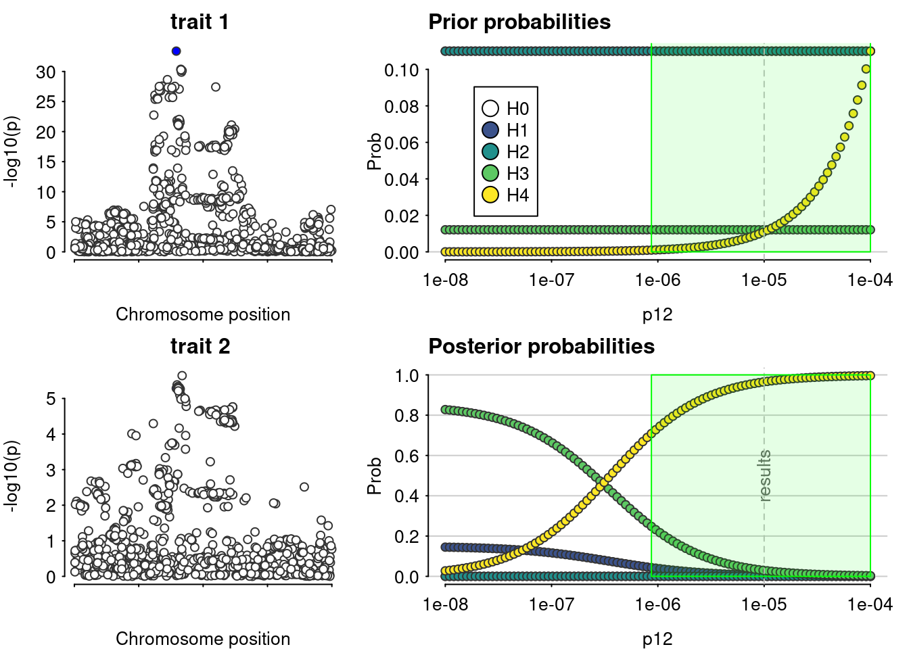
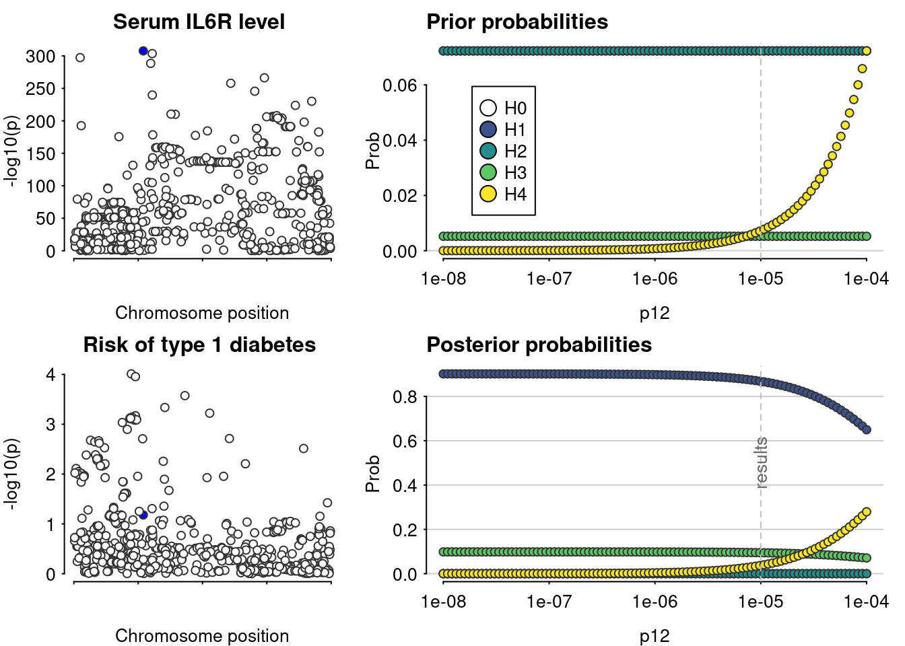
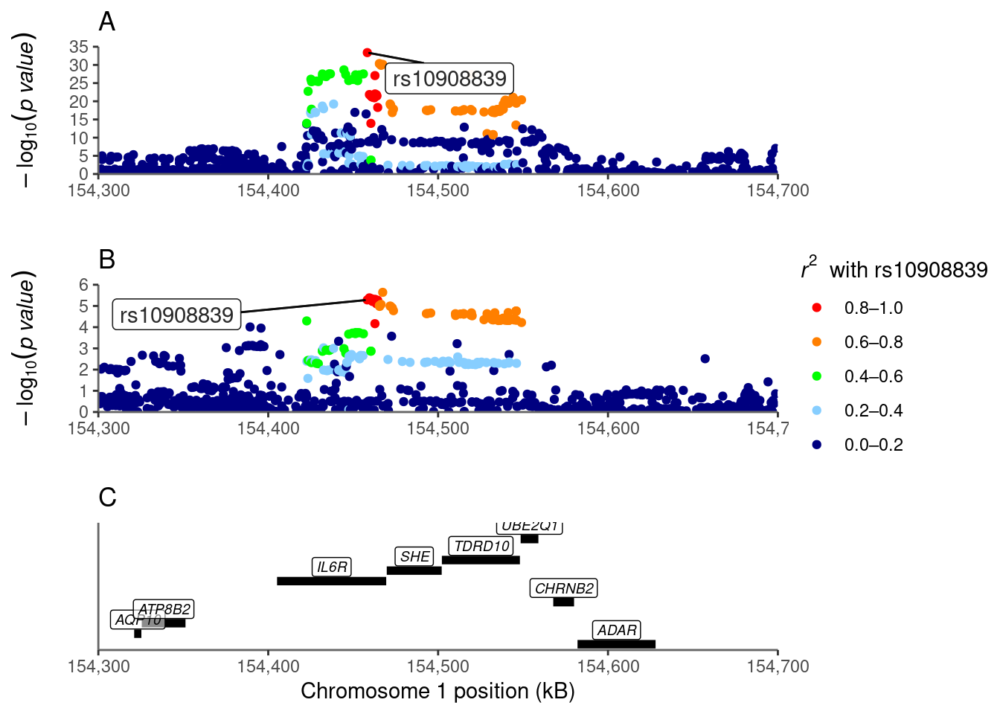
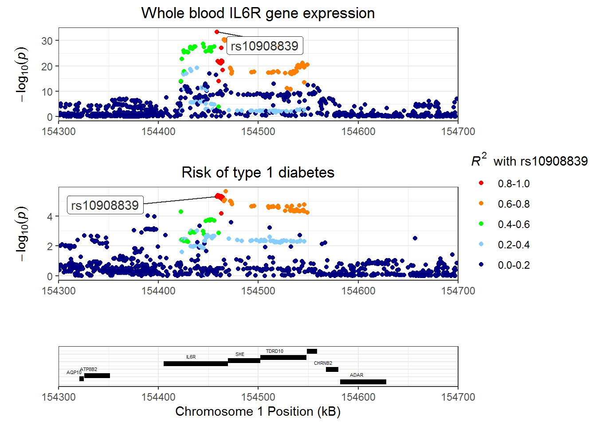

Last updated: 2023-12-01
Checks: 7 0
Knit directory: T1DSCREEN/
This reproducible R Markdown analysis was created with workflowr (version 1.7.0). The Checks tab describes the reproducibility checks that were applied when the results were created. The Past versions tab lists the development history.
Great! Since the R Markdown file has been committed to the Git repository, you know the exact version of the code that produced these results.
Great job! The global environment was empty. Objects defined in the global environment can affect the analysis in your R Markdown file in unknown ways. For reproduciblity it’s best to always run the code in an empty environment.
The command set.seed(20220313) was run prior to running
the code in the R Markdown file. Setting a seed ensures that any results
that rely on randomness, e.g. subsampling or permutations, are
reproducible.
Great job! Recording the operating system, R version, and package versions is critical for reproducibility.
Nice! There were no cached chunks for this analysis, so you can be confident that you successfully produced the results during this run.
Great job! Using relative paths to the files within your workflowr project makes it easier to run your code on other machines.
Great! You are using Git for version control. Tracking code development and connecting the code version to the results is critical for reproducibility.
The results in this page were generated with repository version 18c6971. See the Past versions tab to see a history of the changes made to the R Markdown and HTML files.
Note that you need to be careful to ensure that all relevant files for
the analysis have been committed to Git prior to generating the results
(you can use wflow_publish or
wflow_git_commit). workflowr only checks the R Markdown
file, but you know if there are other scripts or data files that it
depends on. Below is the status of the Git repository when the results
were generated:
Ignored files:
Ignored: .Rhistory
Ignored: .Rproj.user/
Ignored: data/export_LDmat/
Ignored: data/export_harmonization/
Ignored: data/export_manuscript/
Ignored: refs/
Ignored: submission/
Ignored: zz_trash/
Untracked files:
Untracked: .gitignore.swp
Untracked: data/export_functional_variants/
Unstaged changes:
Modified: Build-script.R
Modified: analyses/IL2RB.Rmd
Modified: analyses/IL6ST.Rmd
Modified: analyses/JAK2.Rmd
Modified: analyses/JAK3.Rmd
Modified: analyses/TYK2.Rmd
Modified: figures/IL2RA.png
Modified: figures/IL2RB.png
Modified: figures/IL6R.png
Modified: figures/IL6ST.png
Modified: figures/JAK2.png
Modified: figures/JAK3.png
Modified: figures/TYK2.png
Note that any generated files, e.g. HTML, png, CSS, etc., are not included in this status report because it is ok for generated content to have uncommitted changes.
These are the previous versions of the repository in which changes were
made to the R Markdown (analyses/IL6R.Rmd) and HTML
(docs/IL6R.html) files. If you’ve configured a remote Git
repository (see ?wflow_git_remote), click on the hyperlinks
in the table below to view the files as they were in that past version.
| File | Version | Author | Date | Message |
|---|---|---|---|---|
| Rmd | 65aff9e | jkoskenniemi | 2023-12-01 | Corrected links to external files |
| html | ec92abe | jkoskenniemi | 2023-11-29 | Removed old files |
| Rmd | e928432 | jkoskenniemi | 2023-11-29 | Updated handling data and data scripts |
| Rmd | b709fc8 | EmiliaKaiser | 2023-06-26 | functional variants code |
| Rmd | 465a64a | EmiliaKaiser | 2023-06-21 | updated MR code |
| Rmd | 72b2249 | jkoskenniemi | 2023-06-19 | Updated analysis scripts |
| Rmd | f5c5bba | EmiliaKaiser | 2023-06-09 | updated gene positions and data |
| Rmd | 0d925d8 | EmiliaKaiser | 2023-06-08 | updated |
| Rmd | 483e057 | EmiliaKaiser | 2023-06-08 | updated analyses |
| Rmd | 71be568 | EmiliaKaiser | 2023-06-08 | updated analyses scripts |
| Rmd | 3355212 | jkoskenniemi | 2023-06-06 | Updated analyses scripts |
| Rmd | 0d3f370 | jkoskenniemi | 2023-05-06 | functional programming added to result scripts |
| html | 834297c | jkoskenniemi | 2023-05-04 | Build site. |
| Rmd | fc32168 | jkoskenniemi | 2023-05-04 | wflow_publish(c("analyses/IL6R.Rmd", "analyses/JAK1.Rmd", "analyses/JAK2.Rmd", |
| html | b49016a | jkoskenniemi | 2023-05-04 | Build site. |
| html | c541480 | jkoskenniemi | 2023-05-04 | Build site. |
| html | 52fc218 | jkoskenniemi | 2023-05-03 | Build site. |
| Rmd | d4dd3ad | jkoskenniemi | 2023-05-03 | Added eQTL data, corrected an error in coloc sensitivity figures |
| html | e0d3987 | jkoskenniemi | 2023-04-28 | Build site. |
| html | ba6d5e6 | Jaakko Koskenniemi | 2023-04-26 | Build site. |
| Rmd | fa5cc22 | Jaakko Koskenniemi | 2023-04-26 | First commit |
| html | 4c72944 | Jaakko Koskenniemi | 2022-06-28 | Build site. |
| Rmd | ce380fd | Jaakko Koskenniemi | 2022-06-28 |
|
| html | cedb1db | Jaakko Koskenniemi | 2022-06-28 | Build site. |
| Rmd | 58b4adb | Jaakko Koskenniemi | 2022-06-28 | wflow_git_commit("analyses/IL6R.Rmd") |
Load packages and import data
pacman::p_load(tidyverse, data.table, coloc, TwoSampleMR, ggpubr,
ieugwasr, rio, here)
here::i_am("analyses/IL6R.Rmd")here() starts at C:/Users/jajoko/T1DSCREENsource("code/01-Functions.R")IL6R_eqtl <- import_data("data/export_harmonization/IL6R_eqtl_TwoSampleMR.csv",
"data/export_harmonization/IL6R_T1D_TwoSampleMR.csv", has_beta = TRUE)Harmonising Whole blood IL6R gene expression (4vucPG) and Risk of type 1 diabetes (xN25Oe)Removing the following SNPs for being palindromic with intermediate allele frequencies:
rs10796934, rs10908848, rs11264314, rs11264318, rs11548102, rs11581730, rs11802588, rs11802757, rs1194592, rs1194600, rs12095061, rs12133492, rs12730186, rs12737861, rs1760794, rs1760795, rs1760802, rs1760803, rs1976559, rs2242194, rs2500222, rs2633433, rs28510471, rs28518786, rs2879788, rs2974931, rs2990220, rs35504625, rs3790411, rs3856270, rs4075015, rs4601580, rs4745, rs4845398, rs4845566, rs4845676, rs4845694, rs4971088, rs497829, rs57742792, rs61811388, rs6683557, rs6686873, rs6688149, rs6690230, rs6694006, rs6699729, rs7367897, rs7528635, rs7531982, rs7549338, rs7554581, rs913860, rs9330261, rs9426826, rs9426831, rs9426886, rs9427117, rs9427220, rs9699949, rs9793588, rs9794000, rs9943093manhattan_plots(IL6R_eqtl, gene_start=154405193, gene_end=154469450, title = "IL6R")
IL6R_eqtl <- IL6R_eqtl %>% filter(pos.outcome > 154300000 & pos.outcome < 154700000)
manhattan_plots(IL6R_eqtl, gene_start=154405193, gene_end=154469450, title = "IL6R")
ggsave("figures/IL6R-eQTL-T1D-manhattan.png", height = 6, width = 6)coloc_results_IL6R_eqtl <- analyze_coloc_eqtl(IL6R_eqtl)Warning in check_dataset(D2): minimum p value is: 2.28e-06
If this is what you expected, this is not a problem.
If this is not as small as you expected, please check you supplied var(beta) and not sd(beta) for the varbeta argument. If that's not the explanation, please check the 02_data vignette.Warning in check_dataset(d = dataset2, 2): minimum p value is: 2.28e-06
If this is what you expected, this is not a problem.
If this is not as small as you expected, please check you supplied var(beta) and not sd(beta) for the varbeta argument. If that's not the explanation, please check the 02_data vignette.PP.H0.abf PP.H1.abf PP.H2.abf PP.H3.abf PP.H4.abf
6.95e-30 5.14e-03 4.10e-29 2.94e-02 9.65e-01
[1] "PP abf for shared variant: 96.5%"Results pass decision rule H4 > 0.7
load("data/export_LDmat/IL6R_LDmat.RDA")
plot_coloc_IL6R(genechr = 1,
fig_start = 154300000,
fig_end = 154700000,
coloc_results = coloc_results_IL6R_eqtl$coloc_D1D2,
data = IL6R_eqtl,
D1 = coloc_results_IL6R_eqtl$D1,
D2 = coloc_results_IL6R_eqtl$D2,
LDmat = IL6R)Warning: Using `size` aesthetic for lines was deprecated in ggplot2 3.4.0.
i Please use `linewidth` instead.
This warning is displayed once every 8 hours.
Call `lifecycle::last_lifecycle_warnings()` to see where this warning was
generated.Warning: Removed 3 rows containing missing values (`geom_line()`).Warning: Removed 3 rows containing missing values (`geom_text()`).
ggsave(filename = "figures/IL6R.png", height = 8, width = 6)#Find top SNP
coloc_results_IL6R_eqtl$coloc_D1D2$results$snp[which.max(coloc_results_IL6R_eqtl$coloc_D1D2$results$SNP.PP.H4)] #rs10908839[1] "rs10908839"#Find entries for top SNP
IL6R_eqtl_rs10908839 <- IL6R_eqtl %>%
filter(SNP == "rs10908839")
#betas and 95% CI for beta of T1D (not MR!)
exp(IL6R_eqtl_rs10908839$beta.outcome)[1] 1.079252exp(IL6R_eqtl_rs10908839$beta.outcome - 1.96 * IL6R_eqtl_rs10908839$se.outcome)[1] 1.044422exp(IL6R_eqtl_rs10908839$beta.outcome + 1.96 * IL6R_eqtl_rs10908839$se.outcome)[1] 1.115243#Run MR
MR_IL6R_eqtl_rs10908839 <- TwoSampleMR::mr(IL6R_eqtl_rs10908839)Analysing '4vucPG' on 'xN25Oe'#MR results (unexponentiated)
MR_IL6R_eqtl_rs10908839 id.exposure id.outcome outcome
1 4vucPG xN25Oe Risk of type 1 diabetes
exposure method nsnp b se
1 Whole blood IL6R gene expression Wald ratio 1 0.6821519 0.1496981
pval
1 5.192646e-06#Exponentiate beta and 95% CI
exp(MR_IL6R_eqtl_rs10908839$b)[1] 1.97813exp(MR_IL6R_eqtl_rs10908839$b - 1.96*MR_IL6R_eqtl_rs10908839$se)[1] 1.475126exp(MR_IL6R_eqtl_rs10908839$b + 1.96*MR_IL6R_eqtl_rs10908839$se)[1] 2.652653#Load functional variants
load("data/export_functional_variants/phenoscanner-entries.RDS")
#Look for missense variants for IL6R
functional_variants$IL6R$results %>%
filter(consequence == "missense") %>%
distinct(rsid) #only rs2228145 and rs28730735 rsid
1 rs2228145
2 rs28730735#Do we have eQTL data for these variants?
#Load eQTL data for IL6R
IL6R_eqtl_orig <- read_csv("data/export_harmonization/IL6R_eqtl_TwoSampleMR.csv")Rows: 4457 Columns: 28
-- Column specification --------------------------------------------------------
Delimiter: ","
chr (8): SNP, effect_allele, other_allele, Gene, GeneSymbol, AlleleA, Allel...
dbl (20): pval, chr, pos, Zscore, GeneChr, GenePos, NrCohorts, samplesize, F...
i Use `spec()` to retrieve the full column specification for this data.
i Specify the column types or set `show_col_types = FALSE` to quiet this message.IL6R_eqtl_orig %>%
filter(SNP %in% c("rs2228145", "rs28730735")) %>%
select(SNP) #only rs2228145# A tibble: 1 x 1
SNP
<chr>
1 rs2228145#Do we have T1D risk data for these variants?
IL6R_T1D <- read_csv("data/export_harmonization/IL6R_T1D_TwoSampleMR.csv")Rows: 40016 Columns: 25
-- Column specification --------------------------------------------------------
Delimiter: ","
chr (6): hm_variant_id, SNP, other_allele, effect_allele, variant_id, Pheno...
dbl (13): hm_chrom, pos, beta, eaf, hm_code, pval, chromosome, base_pair_loc...
lgl (6): hm_odds_ratio, hm_ci_lower, hm_ci_upper, odds_ratio, ci_lower, ci_...
i Use `spec()` to retrieve the full column specification for this data.
i Specify the column types or set `show_col_types = FALSE` to quiet this message.IL6R_T1D %>%
filter(SNP %in% c("rs2228145", "rs28730735")) %>%
select(SNP) #only rs2228145# A tibble: 1 x 1
SNP
<chr>
1 rs2228145IL6R_eqtl %>%
filter(SNP %in% c("rs2228145", "rs28730735")) %>%
select(SNP, beta.outcome, se.outcome, pval.outcome, beta.exposure, pval.exposure) %>%
mutate(across(!matches(c("SNP", "pval.outcome", "pval.exposure")), function(x) signif(x, digits = 2))) SNP beta.outcome se.outcome pval.outcome beta.exposure pval.exposure
1: rs2228145 -0.044 0.014 0.00213 -0.029 0.00152124#Does not meet our target for p.val.exposure < 10^-5
sessionInfo()R version 4.3.0 (2023-04-21 ucrt)
Platform: x86_64-w64-mingw32/x64 (64-bit)
Running under: Windows 10 x64 (build 14393)
Matrix products: default
locale:
[1] LC_COLLATE=Finnish_Finland.1252 LC_CTYPE=Finnish_Finland.1252
[3] LC_MONETARY=Finnish_Finland.1252 LC_NUMERIC=C
[5] LC_TIME=Finnish_Finland.1252
time zone: America/New_York
tzcode source: internal
attached base packages:
[1] stats graphics grDevices utils datasets methods base
other attached packages:
[1] RACER_1.0.0 reshape2_1.4.4 ggrepel_0.9.3 here_1.0.1
[5] rio_0.5.29 ieugwasr_0.1.5 ggpubr_0.6.0 TwoSampleMR_0.5.7
[9] coloc_5.2.2 data.table_1.14.8 lubridate_1.9.2 forcats_1.0.0
[13] stringr_1.5.0 dplyr_1.1.2 purrr_1.0.1 readr_2.1.4
[17] tidyr_1.3.0 tibble_3.2.1 ggplot2_3.4.2 tidyverse_2.0.0
[21] workflowr_1.7.0
loaded via a namespace (and not attached):
[1] gridExtra_2.3 readxl_1.4.3 rlang_1.1.1 magrittr_2.0.3
[5] git2r_0.32.0 matrixStats_1.0.0 susieR_0.12.35 compiler_4.3.0
[9] getPass_0.2-2 systemfonts_1.0.4 callr_3.7.3 vctrs_0.6.2
[13] pkgconfig_2.0.3 crayon_1.5.2 fastmap_1.1.1 backports_1.4.1
[17] labeling_0.4.2 utf8_1.2.3 promises_1.2.0.1 rmarkdown_2.23
[21] tzdb_0.4.0 haven_2.5.3 ps_1.7.5 ragg_1.2.5
[25] bit_4.0.5 xfun_0.39 cachem_1.0.8 jsonlite_1.8.7
[29] highr_0.10 later_1.3.1 reshape_0.8.9 parallel_4.3.0
[33] broom_1.0.5 irlba_2.3.5.1 R6_2.5.1 bslib_0.5.0
[37] stringi_1.7.12 car_3.1-2 jquerylib_0.1.4 cellranger_1.1.0
[41] Rcpp_1.0.10 knitr_1.43 pacman_0.5.1 httpuv_1.6.11
[45] Matrix_1.5-4 timechange_0.2.0 tidyselect_1.2.0 rstudioapi_0.15.0
[49] abind_1.4-5 yaml_2.3.7 viridis_0.6.3 curl_5.0.1
[53] processx_3.8.1 lattice_0.21-8 plyr_1.8.8 withr_2.5.0
[57] evaluate_0.21 foreign_0.8-84 zip_2.3.0 pillar_1.9.0
[61] carData_3.0-5 whisker_0.4.1 generics_0.1.3 vroom_1.6.3
[65] rprojroot_2.0.3 hms_1.1.3 munsell_0.5.0 scales_1.2.1
[69] glue_1.6.2 tools_4.3.0 openxlsx_4.2.5.2 ggsignif_0.6.4
[73] fs_1.6.2 cowplot_1.1.1 grid_4.3.0 colorspace_2.1-0
[77] cli_3.6.1 textshaping_0.3.6 fansi_1.0.4 mixsqp_0.3-48
[81] viridisLite_0.4.2 gtable_0.3.3 rstatix_0.7.2 sass_0.4.6
[85] digest_0.6.31 farver_2.1.1 htmltools_0.5.5 lifecycle_1.0.3
[89] httr_1.4.6 bit64_4.0.5